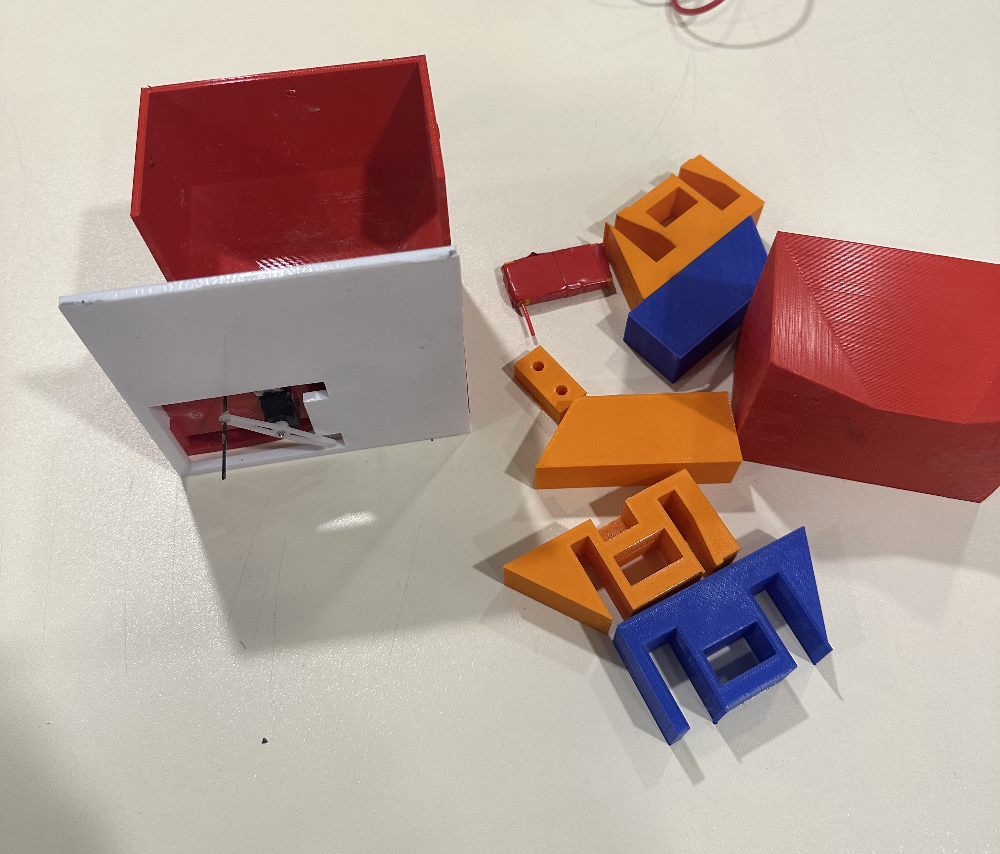

Week 1: Final Project Proposal
Project Idea 1: Seed Dropper Mounts for RC Planes and Drones
In my club Koç Aviation in my school we build RC planes and drones and one of our projects was a seed dropper for environmental projects we did couple of iterations and make it work, but I still think that I can improve my previous designs and make it a product that can really be used in the future for environmental purposes. My goal is to make it as compactible as possible not to interfere with the UAV's aerodynamics also lightweight not to consume to much battery power from excess weight. I think it will look like a rectangular prism, where everything is compressed inside, which can be mounted under UAV.

My first prototype that I designed in school
Project Idea 2: AI system for 3D printers
In my work with FRC and the aviation club we do a lot of 3D printing for our parts and prototypes, and we constantly ran into problems with the printers. The printer just keeps running, wasting hours of time and a lot of filament before anyone notices. Instead of someone constantly looking weather if it is working or not I am planning to create a system that runs on AI and constantly look into the printers so if there is a problem the system can automaticly turn the power off and notify the user. In this way it won't waste time and filament.

My sketch for the system
Project Idea 3: A fully autonomous ecosystem for plants and aquariums
My best friend have a lot of aquariums and plants and I see him working on them and sometimes it can be so time consuming. In order to solve this I am planning to design a clever ecosystem with sensors and dispensors so it can automaticly check values and dispense the needed chemical such as water, fertilizer and food. Also, I am planning to connect the system to a webpage so the owner can monitor the system anytime he or she wants. My goal is to make it efficient and modular at the same time.

My sketch for the system